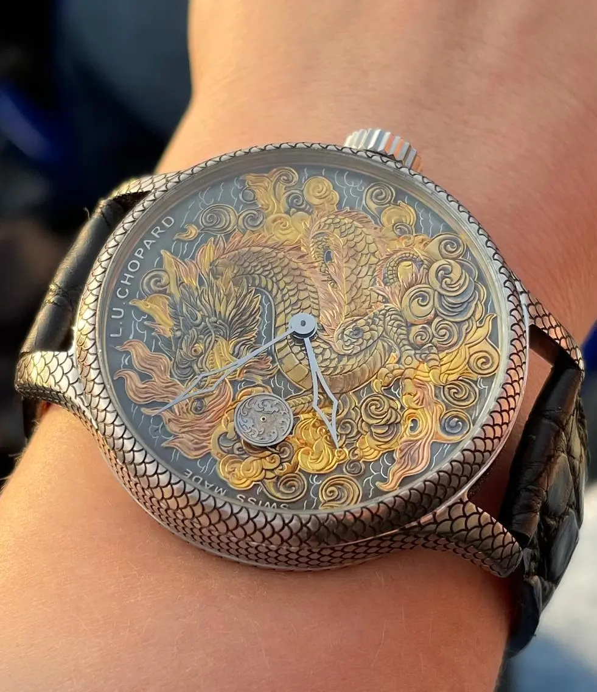
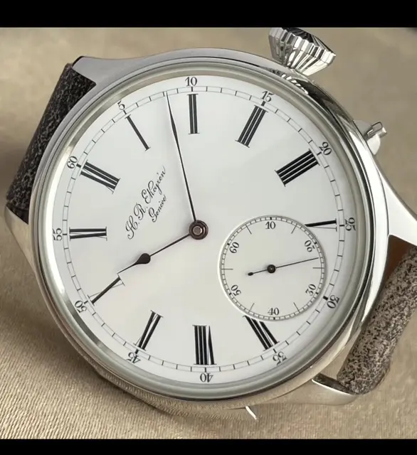
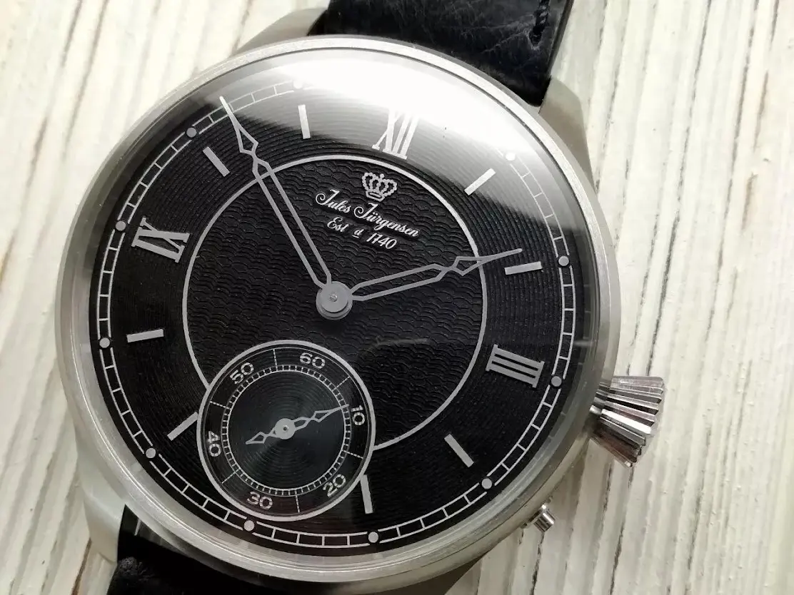
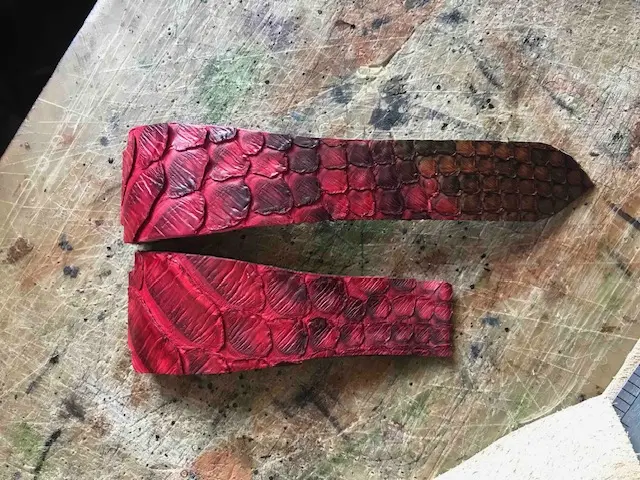
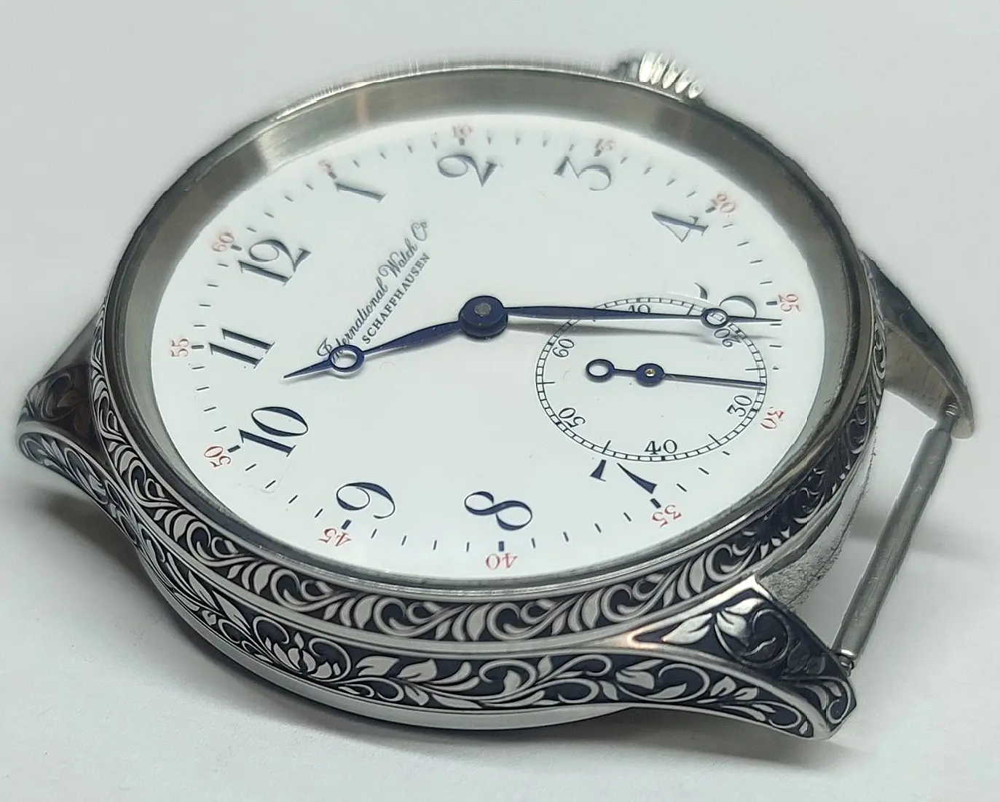
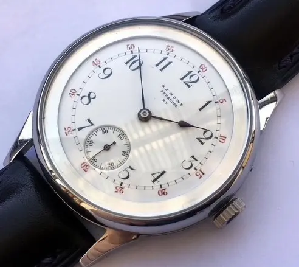
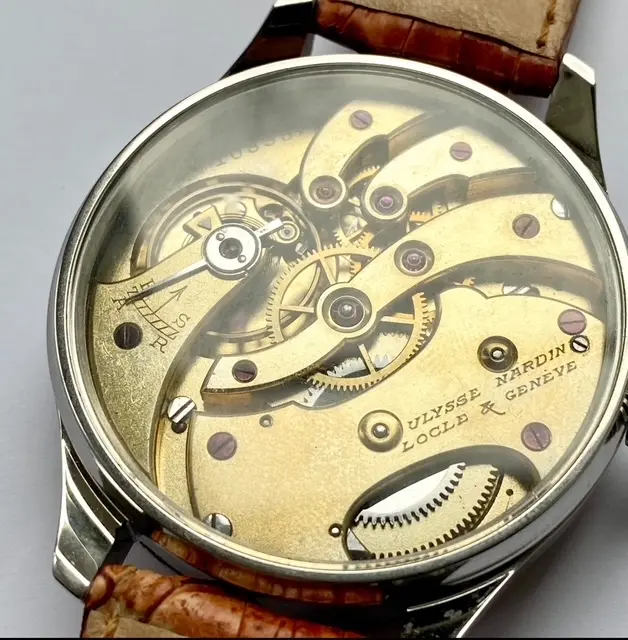
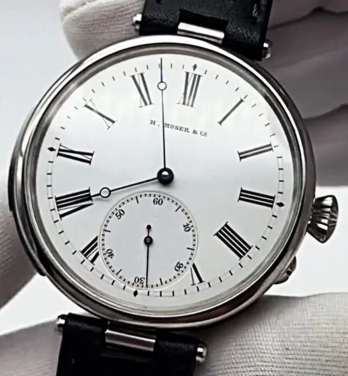
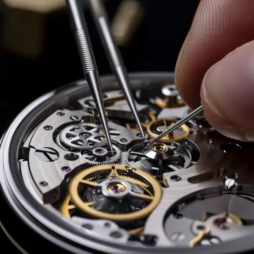
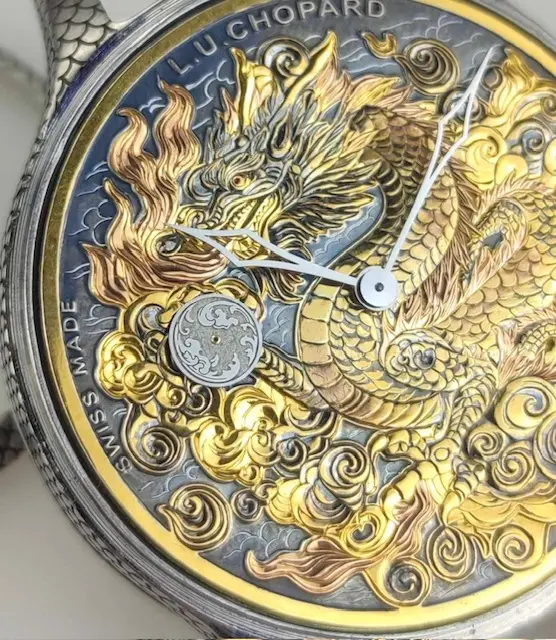

Étage Supérieur
Вершина годинникової майстерності
Patek Philippe · Vacheron Constantin · A. Lange & Söhne · Audemars Piguet · Blancpain · Breguet · Jaeger‑LeCoultre
Atelier de Montres Suisses · Swiss Watch Tailor
Ваш час у Вашому ДНК
We do not make watches for everyone.
We make one watch — for You.
Ми не робимо годинники для всіх. Ми робимо один годинник — для Вас.
One watch. One owner. One lifetime.
Один годинник. Один власник. Одне життя.
Geneva · Lviv · Kyiv · Dnipro · Warsaw · Prague · Eschborn · Munich























Bespoke Service
Експертний вибір швейцарського механізму під Ваші вимоги

Унікальне оформлення: циферблат, гравіювання, скелетонізація
Корпус, ремінець, циферблат, стрілки, фінальна обробка — все під параметри Вашої руки
Кожна послуга — від 500 CHF з авторським наглядом Майстра
Спеціальний сервіс — пошук та придбання будь-якого годинника під замовлення. Від 199 CHF + 10% від вартості.
Зарезервуйте Вашу Private Bespoke Session
The Bespoke Experience
Від ідеї до Вашого годинника — 4–6 місяців майстерності
Ваш годинник — це не прикраса. Це маніфест. Кожна деталь закодована під Вас: характер, ритм, естетика.

Від першого ескізу до фінального штриху — жодного компромісу. Лише те, що гідне Вашого запʼястя.

Patek Philippe, Vacheron Constantin, Audemars Piguet — механізми, що пережили епохи. Тепер у Вашому годиннику.

Персональна зустріч з хорложерьє. Ваші бажання, стиль, характер — основа майбутнього годинника.
Patek Philippe, Vacheron Constantin, A. Lange & Söhne, Audemars Piguet та інші. Лише найкраще.
Багатоетапний контроль якості. Кожен компонент перевіряється особисто майстром.
Чотири рівні досконалості
Вершина годинникової майстерності
Patek Philippe · Vacheron Constantin · A. Lange & Söhne · Audemars Piguet · Blancpain · Breguet · Jaeger‑LeCoultre
Витончена розкіш для справжніх цінителів
Girard‑Perregaux · Ulysse Nardin · IWC · Bovet · H. Moser · Jaquet Droz

Символ статусу та неперевершеної якості
Cartier · Chopard · Tiffany · C.H. Meylan · Touchon · Rolex · Ed. Koehn · Zenith
Спеціально для поціновувачів
Repeaters · Dead Second · Split‑Second · Chronographs · Moon‑Phase · Double‑Sided · Unique Complications
Всі годинники виготовляються виключно на індивідуальне замовлення. Ціна залежить від обраного механізму та складності виконання. Від 500 CHF.

Atelier Portfolio
Ваш годинник вже чекає на Ваші ідеї
Every watch tells a story. Yours is yet to be written.
Кожен годинник розповідає історію. Ваша ще попереду.


*на фото — реальні годинники наших Клієнтів · All watches in the photo are real products for our Clients
Зарезервуйте зустріч з хорложерьє
Ваша Private Bespoke Session тут